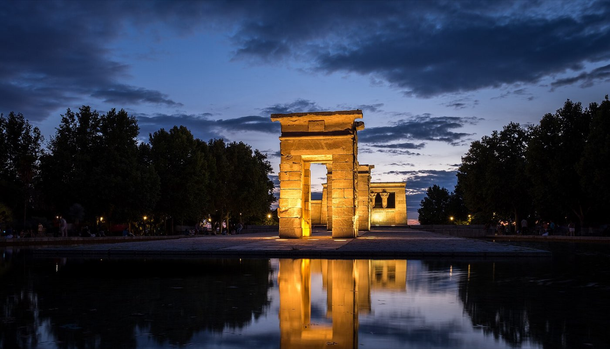
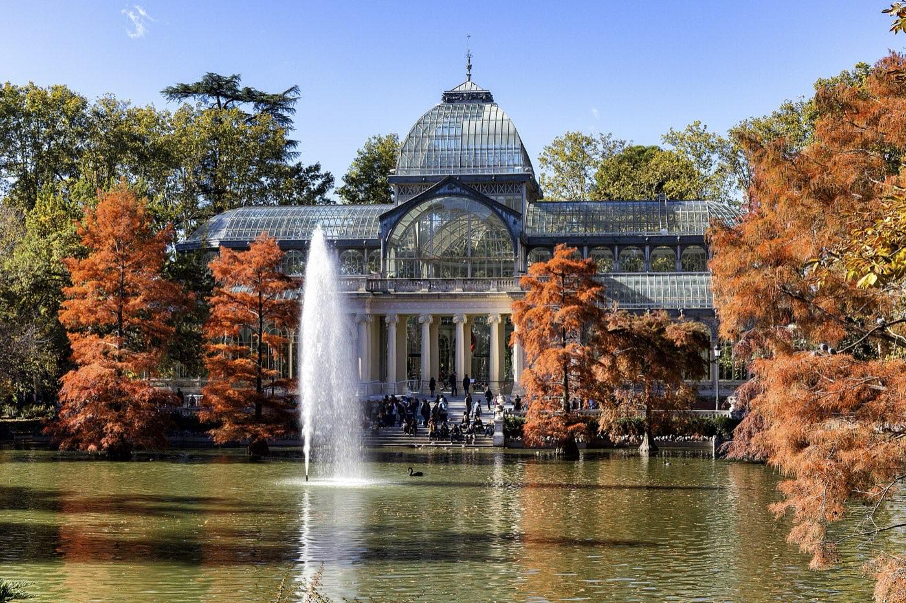

Madrid · 3 days
3 Days in Madrid: What You Actually Have to See
Madrid runs about two hours behind the rest of Europe, and its three great galleries are built for that. The Prado stays open until 8pm, the Reina Sofía until 9pm, and both give their tickets away in the last two hours of the day. Lunch does not start until two, the kitchens shut between four and eight, and dinner is at ten. So the trip inverts the usual order: streets and palaces in the morning, a long lunch, a gallery in the late afternoon and evening, dinner when the city eats. Getting this backwards is what makes three days in Madrid feel rushed.

Three days covers Madrid's must-sees comfortably. The Prado, the Reina Sofía and the Thyssen are the reason to come, and they sit within a ten-minute walk of each other along the Paseo del Prado. The Royal Palace, the Habsburg centre around Plaza Mayor, the Retiro and the tapas streets of La Latina fill the rest. Distance is not the problem here. The centre is compact and the metro is quick.
What decides the order is the clock. Madrid eats lunch from about two and dinner from about nine, and between roughly half past four and eight most kitchens are shut, serving drinks at best. The galleries run on the same late schedule. The Prado is open Monday to Saturday from 10am to 8pm, and Sundays and holidays to 7pm. The Reina Sofía runs to 9pm on Monday and Wednesday to Saturday, closes at 2:30pm on Sunday, and shuts all day Tuesday. That combination gives the day a usable second half that most itineraries throw away by planning a 9am museum and a 6pm dinner that no restaurant is serving.
Then there is the free entry, which is where the plan gets decided. The Prado is free Monday to Saturday from 6pm to 8pm, and 5pm to 7pm on Sundays and holidays. The Reina Sofía is free from 7pm to 9pm on Monday and Wednesday to Saturday, and from 12:30pm to its 2:30pm close on Sundays. The Thyssen is free on Mondays from noon to 4pm, which is also the only time it is open that day. Three museums, three different free windows, and they are not equally worth taking. One of them is a trap.
The trap is the Prado. Two free hours sounds generous until the queue at the Goya entrance starts forming half an hour or more before the doors open, last admission is 30 minutes before closing, and the busiest two hours of the museum's day are spent moving through the Velázquez rooms in a crowd. The Prado holds thousands of paintings across dozens of rooms. Pay for it, go when it is quiet, and give it three or four hours. Spend the free windows on the two museums where the window is actually the right length for the collection.
The city runs two hours late, and so do its galleries. Mornings go to streets, palaces and parks, lunch is at two, and the afternoon and evening belong to one museum a day, finishing at 8pm or 9pm with dinner after. Take the free window at the Thyssen (Mondays, noon to 4pm) and the Reina Sofía (from 7pm most days). Pay for the Prado and go in the morning; its free window is two crowded hours with a queue in front of them.
Day 1 — Habsburg Madrid in the morning, the Prado for the whole afternoon
Start at Plaza Mayor and the streets around it, which is the oldest layer of the city and the one that empties out as the day warms up. The Mercado de San Miguel is a few steps off the square, housed in a 1916 iron and glass hall. Go in to look at it, then eat somewhere else; it is a handsome building that charges accordingly.
Walk west to the Royal Palace. Buy the ticket ahead, because this is the one sight in Madrid that closes without warning: the palace is still used for state ceremonies, and it shuts to visitors when one is on. Open 10am to 7pm Monday to Saturday from April to September and to 4pm on Sundays, 10am to 6pm daily from October to March, with last entry an hour before. Citizens and residents of the EU, and citizens of Latin American countries, get in free from Monday to Thursday in the last two hours, 4pm to 6pm in winter and 5pm to 7pm in summer, with a passport or national ID card to prove it. That window is walk-up only and cannot be booked, and it collides with the afternoon this itinerary puts in the Prado. If the free entry matters more than the gallery time, swap them and go to the Prado in the morning instead.
The Changing of the Guard happens at the Puerta del Príncipe on Wednesdays and Saturdays between 11am and 2pm, with the full Solemn Changing on the first Wednesday of most months, skipping January, August and September. Both are cancelled for bad weather or official business. It is worth timing the morning around if the dates line up, and not worth reorganising a day for.
Lunch at two, then the Prado until it closes. Buy a ticket for an early afternoon entry and give the museum the rest of the day. Three things justify the trip on their own: Velázquez's Las Meninas, Goya's black paintings in the basement rooms, and Bosch's Garden of Earthly Delights. Everything else is a bonus and no one sees all of it. The building empties noticeably in the hour before the free window starts, which is the best time in the day to stand in front of Las Meninas. Then walk up to Huertas or La Latina and eat at nine.
The must-sees
Old Madrid while it is cool and quiet, then one long afternoon in the Prado. Dinner belongs at nine, not six.
Day 2 — The Retiro at opening, the Thyssen at midday, the Reina Sofía for free at seven
The Retiro is the one part of this trip that rewards an early start, because the park in the first hours is where Madrid goes before work. Walk in past the Puerta de Alcalá, take the lake with its rowing boats and the colonnade above it, then cut south-east to the Palacio de Cristal, a glasshouse built for an 1887 exhibition and now used for installations by the Reina Sofía. Entry is free and it takes ten minutes.
The Thyssen-Bornemisza is across the Paseo del Prado from the park's western edge, and it is the one museum here that a half day covers. It fills the gaps the other two leave: a private collection that runs from medieval panels through the Impressionists to Hopper and Rothko, arranged chronologically from the top floor down. Regular hours are 10am to 7pm, Tuesday to Sunday, with Saturday running to 11pm and last entry 30 minutes before close. On Mondays it opens only from noon to 4pm, and the collection is free for those four hours. That is the best free offer in the city: a complete museum in a window long enough to see it properly.
In the late afternoon, walk down the Paseo del Prado to Atocha and the Reina Sofía. Doors are at 10am and the free window starts at 7pm, running to the 9pm close on Monday and Wednesday to Saturday. Two hours is the right amount of time here. The collection is concentrated rather than vast, and it is built around one room: Guernica, hung alone with Picasso's preparatory sketches nearby. Get there for seven, see the Picasso room first while it is still thinning out, then the Dalí and Miró rooms afterwards.
Two dates change this day. On a Sunday the museum shuts at 2:30pm and the free window is only 12:30pm to 2:30pm, so the day runs in reverse: the Reina Sofía at midday, the park in the afternoon. On a Tuesday it is closed altogether, and the Thyssen takes the evening instead.

The must-sees
One free museum at midday, one free museum at seven, and the park in between. On a Sunday, run the day backwards.
Day 3 — La Latina, the market day fork, and sunset at the Templo de Debod
The third day is the one that changes most with the date. If it is a Sunday, El Rastro takes the morning: a flea market that has run in the same streets since the 18th century, spilling down Ribera de Curtidores from Plaza de Cascorro between 9am and 3pm on Sundays and public holidays. Go at nine. By eleven the lanes are packed tight enough that browsing stops being possible, and the pickpocketing is what you would expect in that kind of crush. Afterwards the bars of Cava Baja do the Sunday lunch that the market exists to end in.
If it is not a Sunday, La Latina is still where the day starts, just calmer. Walk Cava Baja and Calle Almendro, look into San Andrés and the Basílica de San Francisco el Grande, and treat lunch as the event. This is the neighbourhood where the tapas tradition is worth taking seriously, standing at the bar, one plate per stop, moving on.
Spend the afternoon on whatever the first two days left out. The Prado deserves a second visit more than the Royal Palace deserves a first. Sorolla's house museum north of the centre is the good small option, and the Mercado de San Fernando in Lavapiés is the honest version of what San Miguel sells.
Then the Templo de Debod for sunset, which is the one appointment in this itinerary set by the sky rather than an opening time. It is a genuine 2nd-century BC Egyptian temple, dismantled and shipped to Madrid in 1968 after Spain helped rescue monuments threatened by the Aswan Dam, and rebuilt on a ridge west of the centre facing open sky. The pool in front of it takes the reflection. Everyone in Madrid knows this, so the terrace fills as the light goes. Dinner is afterwards, which in Madrid still leaves plenty of evening.
The must-sees
A market morning if the dates give you a Sunday, a tapas morning if they do not, and the same sunset either way.
The free windows, and which ones to take
| Museum | Free when | Verdict |
|---|---|---|
| Museo del Prado | Mon–Sat 6pm–8pm; Sun and holidays 5pm–7pm | Skip it. The queue starts well before the doors, last entry is 30 minutes before closing, and the collection needs hours |
| Museo Reina Sofía | Mon and Wed–Sat 7pm–9pm; Sun 12:30pm–2:30pm. Closed Tuesdays | Take it. Two hours suits the collection, and Guernica is the reason you came |
| Museo Thyssen-Bornemisza | Mondays noon–4pm, the only hours it opens that day | Take it. Four free hours is enough for the whole museum |
| Royal Palace | Mon–Thu, last two hours: 4pm–6pm Oct–Mar, 5pm–7pm Apr–Sep | Only for EU and Latin American citizens and EU residents, with ID. Walk-up only, self-guided, and it clashes with gallery time |
| Retiro, Debod, Plaza Mayor, El Rastro | Always | Free with no window at all, which is what makes them the flexible parts of the plan |
What three days does not cover
Cutting deliberately beats rushing. These need time this trip has already spent:
- Toledo or Segovia. Both are well under an hour away by high-speed train and both are worth a day. That day costs you one of the three museums, which is the wrong trade on a first visit.
- The Prado properly. One long afternoon covers the highlights and perhaps a third of the building. Anyone who cares about painting should plan four days in Madrid, not three.
- A football night at the Bernabéu or the Metropolitano. Fixed to a fixture list that has nothing to do with your dates, and an evening this plan has already given to a gallery.
- The Rastro, if your three days hold no Sunday or public holiday. It does not run on other days, and no other market in the city substitutes for it.
- Madrid's late nights. The bars in Malasaña and Chueca get going around midnight. Three full sightseeing days and that schedule do not both fit.
Common questions about 3 days in Madrid
Is 3 days enough for Madrid?
Yes for the essentials. Three days covers the Prado, the Reina Sofía and the Thyssen, the Royal Palace and Habsburg centre, the Retiro, La Latina and the Templo de Debod. It does not stretch to a day trip to Toledo or Segovia, or to a second visit to the Prado, without dropping something.
When is the Prado free, and is it worth going then?
Free entry runs Monday to Saturday from 6pm to 8pm, and 5pm to 7pm on Sundays and public holidays. It is not the bargain it looks like. The queue forms well before the doors open, last admission is 30 minutes before closing, and those are the most crowded hours of the day. Pay for a ticket and go in the morning or early afternoon instead.
What are the free hours at the Reina Sofía and the Thyssen?
The Reina Sofía is free from 7pm to 9pm on Monday and Wednesday to Saturday, and from 12:30pm to 2:30pm on Sundays, when it closes at 2:30pm. It is shut on Tuesdays. The Thyssen is free on Mondays from noon to 4pm, which is the only window it opens that day. Both are worth planning around.
Do I need to book the Royal Palace of Madrid in advance?
Book it. The palace is still in use for state ceremonies and closes to visitors without much notice when one is scheduled, so a ticket with a date on it is worth having. Citizens and residents of the EU and citizens of Latin American countries can enter free in the last two hours from Monday to Thursday, but that entry is walk-up only, self-guided, and needs a passport or national ID.
What time do people eat in Madrid?
Lunch runs from about 2pm to 4pm and dinner starts around 9pm, with kitchens busiest after 9:30pm. Between roughly 4:30pm and 8pm most places serve drinks and snacks only. Restaurants doing full meals at 6pm are aimed squarely at visitors.
What is closed in Madrid on Mondays and Tuesdays?
The Reina Sofía closes on Tuesdays. On Mondays the Thyssen opens only from noon to 4pm, free of charge, while the Prado and the Royal Palace keep normal hours. No single day in Madrid takes out all three galleries.
Is El Rastro worth it, and when does it run?
Sundays and public holidays, 9am to 3pm, in the streets below Plaza de Cascorro in La Latina. It is worth it if you get there by about nine. From eleven onwards the lanes are too crowded to browse in, and crowds like that attract pickpockets.
Tailored to your trip
Travelling to Madrid? Plan your trip around your real arrival and departure times.